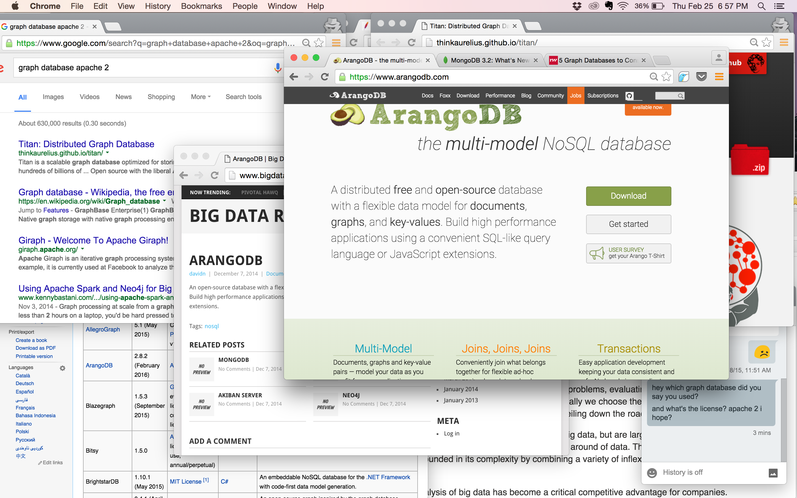
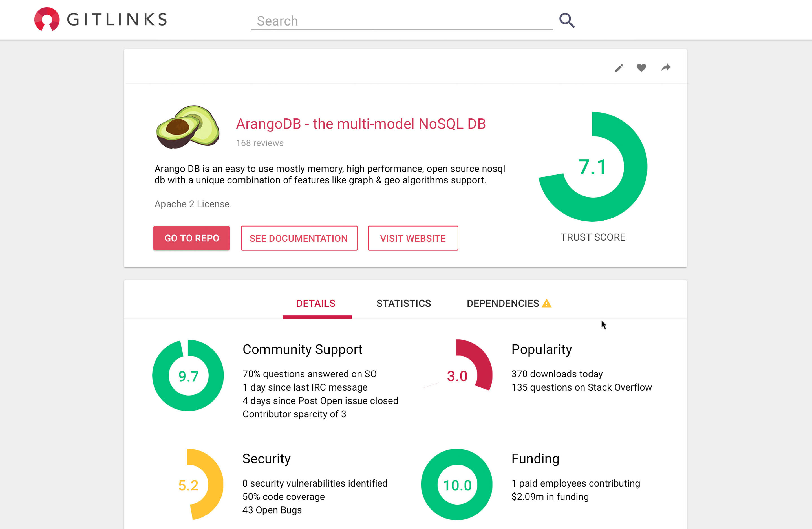

Subscribe
We create confidence in using open source software.
Open source is great, but the associated risks are hard to correctly evaluate and track.
The GitLinks Trust Score is the first standard for evaluating open source risk.
 
Interested?
Take a look behind the scenes. We're in dev mode.
GET A SNEAK PEEK